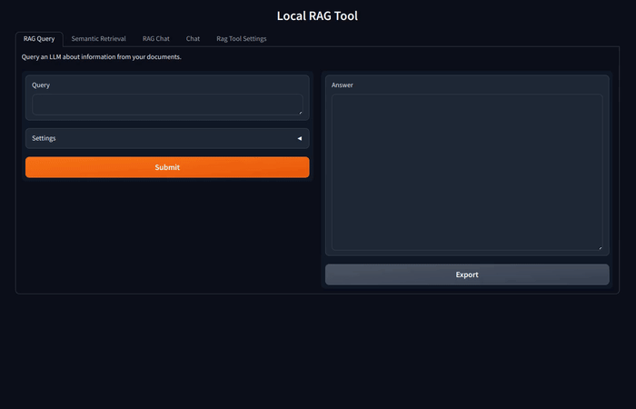
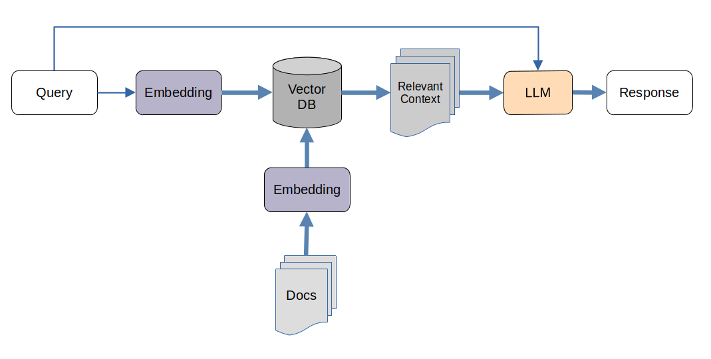

Portfolio

AI Workshops and Talks
Workshops and talks explaining artificial intelligence: AI fundamentals, machine learning, Generative AI and LLMs. Held at the KI-Servicezentrum Berlin-Brandenburg of the Hasso Plattner Institute, among others.

RAGSST: Retrieval Augmented Generation and Semantic Search Tool
Open-source tool to chat with and semantically search your own documents, fully local: no data leaves the machine. Local LLMs (Ollama), vector database (ChromaDB), eight retrieval modes. Gradio, Docker.

Leichte Sprache Tool
Translation of complex German texts into Leichte Sprache (Easy Language) for the DigitalAgentur Brandenburg. Local open LLMs fine-tuned on the client's data, prompt engineering. Open source.

AI Assistant Chatbot
Multi-purpose conversational agent powered by Generative Pre-trained Transformers (GPT). Large Language Models (LLMs). Natural Language Processing (NLP).
Aerial Animal Detection System
Cattle detection, tracking and counting on aerial images via Computer Vision and Neural Networks

International Classification of Diseases (ICD) Classifier
Microservice for classification of clinical documents according ICD codes. Hybrid system including machine learning and statistical search. TF-IDF. Natural Language Processing.

Georeferenced Weather Warning System for Agriculture
Online machine learning system on time series. It collects forecast data of several weather services for given locations, validates it via user input or a locally installed weather station, and learns to better predict future warnings.

Machine Learning (ML) fundamentals and types of ML algorithms
Artificial Intelligence Lecture at philosophers Colloquium "Phencoco"

Deep-Tic-Tac-Toe. Explainable AI
Educational self-learning board game applying Deep Reinforcement Learning.

Automated wind park data analyzer
Tool for automating the analysis of wind turbine’s sensors data for anomaly detection and generation of statistical data for certification purposes. Matlab.

Telegram Watchbot
Watchbot for guarding server, restarting services and sending related information.

Lane Detection for Autonomous Driving
Transmission, processing and analysis of Sensor-Data (LIDAR-Scanner) for lane detection and tracking. Location concept development and simulation. Data fusion between sensor-data and aerial images.

Frequency Converter Logic Simulator
Tool for simulating the logic behaviour of a pitch frequency converter of wind turbines.